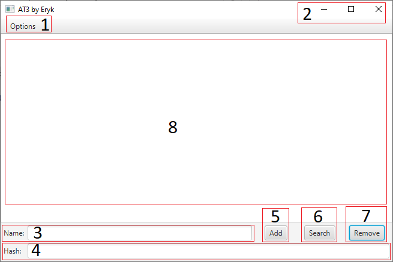

User Guide

Legend:
- The options dropdown menu allows you to select between the User Guide and the JavaDoc
- The window controlls allow you to minimize, maximize and close the program.
- Name text field where you input any item you would like to be hashed and added to the list.
- Hash text field where the hashed value of selected item shows up.
- Add Button allows you to add the item you put in the name text field into the list.
- Search Button allows you to search the list for items that match the name you put into the name text field.
- Remove Button allows you to remove any item from the list that matches the name in the name text field.
- List of items already added to the list with the aforementioned controls, you can select any item from the list and it will display its hashed value in the hash text field.